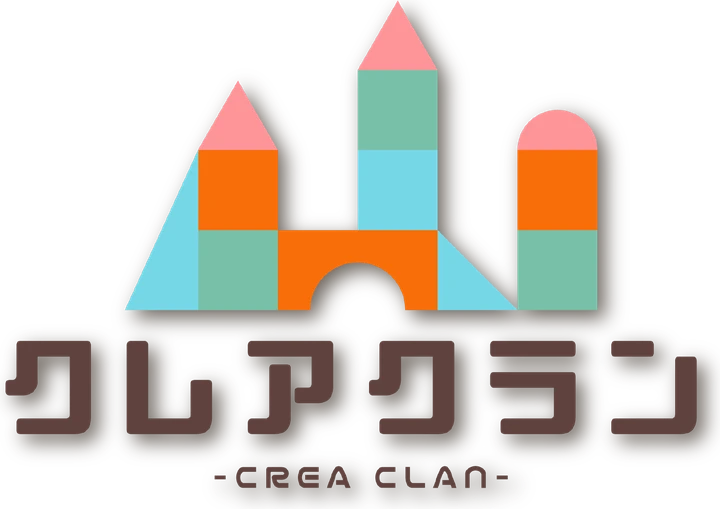
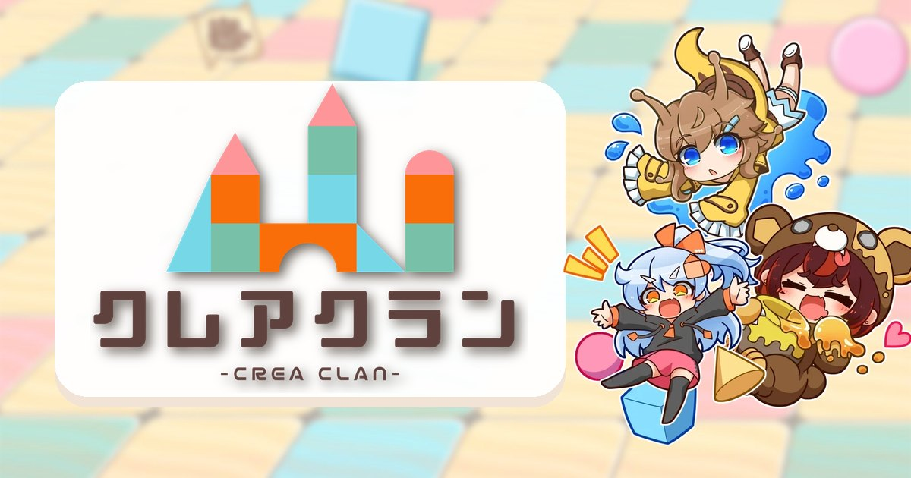

クレア
『走れ！クレアちゃん』の主人公で、クレアクランの看板娘！ 走って、飛んで、積み木を集めて、乗り物をクラフトしながらステージを駆け抜けます。

明るくポップな作風で、kawaiiキャラクターが活躍する作品を創るインディーゲームサークルです✨
インディーゲームの開発を行っているゲーム制作サークルです！
kawaii雰囲気のゲームが多い……！と思います～
Steamだけでなく、Apple StoreやGoogle Play Storeなど、複数のプラットフォームにも開発したゲームをパブリッシュしたりします♪
サークル内には複数のクリエイターが所属しています！ 所属クリエイターはクリエイター紹介のページで紹介しています。
コミックマーケット（コミケ）やインディーゲーム出展イベントにもよく参加しますー！ 出展情報はSNSやホームページで告知します♪

『走れ！クレアちゃん』の主人公で、クレアクランの看板娘！ 走って、飛んで、積み木を集めて、乗り物をクラフトしながらステージを駆け抜けます。
『ガーデンハント』の主人公。ナメツムリ村に住む、元気いっぱいの女の子。村のみんなを救うため、庭園迷路へと駆け出します。
新作『トラップス』に登場する、森からやってきたいたずら好きの女の子。お気に入りのクマの着ぐるみを着て、今日も村へいたずらをしにやってくる！
kawaiiキャラクターが活躍するゲームを制作しています。Steamやスマートフォン向けのデジタルゲームから、カードゲームなどのアナログゲームまで。
コミックマーケット（コミケ）や東京ゲームダンジョンなど、インディーゲームのイベントにもよく出展しています。出展情報はSNSやホームページで告知します♪
アクリルスタンドや缶バッジ、フィギュア、ぬいぐるみなど、キャラクターのグッズも制作しています。一部は公式BOOTHで購入できます。
新しい順に並べています。
公式ホームページをリニューアル
『ガーデンハント』メイナのぬいぐるみが完成
コミックマーケット108 に出展『ガーデンハント』パッケージ版と、メイナ・クレア・クマチの新作ちびキャラアクスタを頒布
新作アナログゲーム『トラップス』のキービジュアルを公開ゲーム実況・動画配信ガイドラインを制定／ラジオ「クレアクランカフェ」のチャンネル登録者が1,000人を突破
『ガーデンハント』が渋谷サクラステージ「404 Not Found」で筐体展示（〜7月）
東京ゲームダンジョン12 に出展BSフジ『界隈ほーる』で『ガーデンハント』が紹介される
SHIBUYA GAMES WEEK 2026 に『ガーデンハント』を出展
『ガーデンハント』Steam で発売！9言語対応・日本語フルボイス
コミックマーケット107 で『ガーデンハント』完成版をパッケージで先行頒布初めてのパッケージ版。メイナ役・柊 優花さんのサイン入り限定版は完売
東京ゲームダンジョン10、SAKURA CREATOR'S MARKET XG に出展
コミックマーケット106、東京ゲームダンジョン9 に出展『ガーデンハント』β版ROMはディスク版・ダウンロード版ともに完売
『ガーデンハント』Steam ストアページを公開
『走れ！クレアちゃん』30,000ダウンロード突破！
東京ゲームダンジョン8 に初出展、正式タイトル『ガーデンハント』が決定
ラジオ「クレアクランカフェ」をスタート
『PRJ rain（仮）』α版を BOOTH でダウンロード販売
コミックマーケット105 で新作『PRJ rain（仮）』α版ROMを頒布（完売）
コミックマーケット104 で『rain（仮）』プロト版を初頒布
公式ホームページを開設
コミックマーケット103 に出展（ゲームROM完売）
『走れ！クレアちゃん』Steam 版を配信、コミックマーケット102 に出展新作の主人公「メイナ」をブースで初お披露目。初のオリジナルアクリルグッズも頒布
『走れ！クレアちゃん』スマホアプリ版をリリース
インディーゲームサークル「クレアクラン」を結成1作目『走れ！クレアちゃん』を unity1week 参加作として unityroom で公開